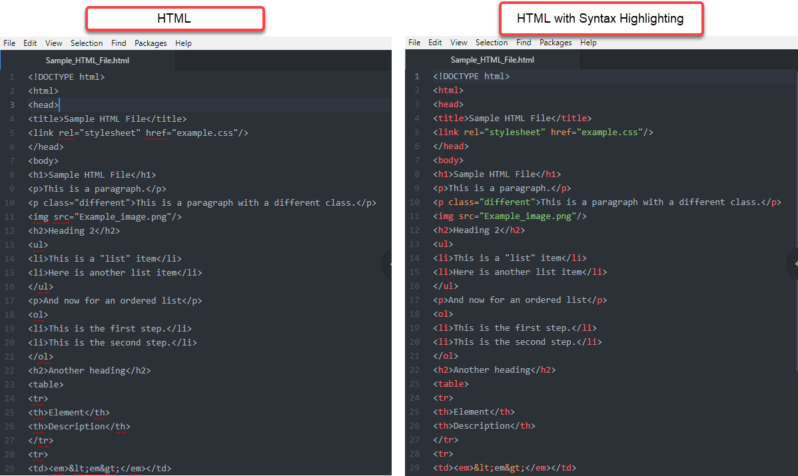

Syntax Highlighting¶
Syntax highlighting displays source code in different colors and fonts, so it’s easier to distinguish code elements and identify errors.
Atom must be installed on your computer before you can set-up additional features.
HTML and Markdown syntax preview come pre-loaded in Atom, but RST does not. You will install the RST syntax highlighting package and then learn how to enable syntax highlighting for all of these languages.
Instructions to install the RST Syntax Highlighting package:
Open Atom.
- Open Settings by clicking on the appropriate path for your operating system.
Mac: Atom > Preferences
Windows: File > Settings
On the left menu, click Install.
In the Search Packages box, type:
language-restructedtext. The language-restructuredtext package box appears. View an image of the install packages screen.Click Install.
{kind=link}
Instructions to Enable Syntax Highlighting:
Open a new file.
Type a few lines of HTML, Markdown, or RST.
Save the file using the appropriate language file extension from the table below.
Language |
File Extension |
|---|---|
HTML |
filename.htm or filename.html |
Markdown |
filename.md |
RST |
filename.rst |
The file now appears with syntax highlighting.
Note
After the initial save, the file will always re-open with syntax highlighting.
Any previously saved .htm, .html, .md, or .rst file will open with syntax highlighting.
To “turn off” syntax highlighting for a particular language, you will need to disable the syntax highlighting package for that language. To do that, go to Atom > Preferences > Packages. You will see all of your currently installed packages. Find the appropriate package and click Disable.
Related Information:
Online Syntax Cheatsheets